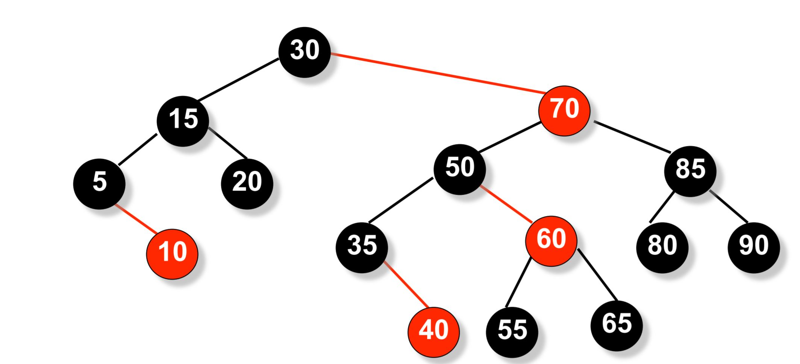
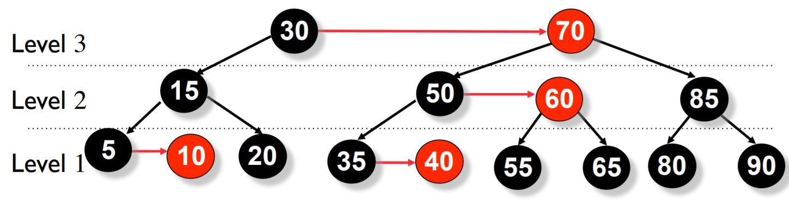
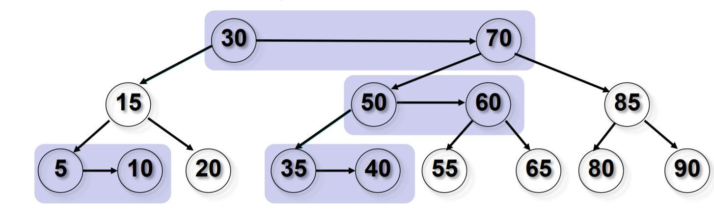
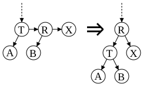
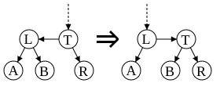

Aa tree
AA 树是一种用于高效存储和检索有序数据的平衡树形结构，Arne Andersson 教授于 1993 年在他的论文 "Balanced search trees made simple" 中介绍，设计的目的是减少红黑树考虑的不同情况．AA 树可以在 $O(\log N)$ 的时间内做查找，插入和删除．下面是一个 AA 树的例子．

AA 树是红黑树的一种变体，与红黑树不同，AA 树上的红色节点只能作为右子节点．这导致 AA 树模拟了 2-3 树而不是 2-3-4 树，从而极大地简化了维护操作．红黑树的维护算法需要考虑七种不同的情况来正确平衡树．
因为红色节点只能作为右子节点，AA 树只需要考虑两种情况．
定义
AA 树遵循与红黑树相同的规则，但添加了一条新规则，即红色节点不能作为左孩子出现．
- 每个节点都可以是红色或黑色．
- 根节点总是黑色．
- 叶节点（NULL）总是黑色．
- 红色节点的两个子节点必须都是黑色，即没有两个相邻的红色节点．
- 从根节点到 NULL 节点的每条路径都有相同数量的黑色节点．
- 红色节点只能作为右子节点．
平衡维护
AA 树的每个节点维护一个 level 字段，类似红黑树的每个节点维护一个 color 字段 ("RED" or "BLACK")．level 的规定满足以下 5 个条件：
1、每个叶节点的 level 是 1．
2、每个左孩子的 level 是其父节点的 level 减 1．
3、每个右孩子的 level 等于其父节点的 level 或等于其父节点的 level 减 1．
4、每个右孙子的 level 严格小于其祖父节点的 level．
5、每个 level 大于 1 的节点有两个孩子．

水平链接（Horizontal Link）
子节点的 level 等于父节点的 level 的链接被称为 水平链接，类似于红黑树中的红链接．允许单独的右水平链接，但不允许连续的右水平链接；不允许左水平链接．这些限制比红黑树的限制更加严格，因此 AA 树的平衡过程比红黑树的平衡过程在程序上要简单得多．

插入和删除操作可能会暂时导致 AA 树失去平衡（即违反 AA 树的不变性）．恢复平衡只需要两种不同的操作："skew"（斜化）和"split"（分裂）．"Skew"是将一个包含左水平链接的子树进行右旋转，以替换为一个包含右水平链接的子树．"Split"是进行左旋转并增加 level，以替换一个包含两个或更多连续的右水平链接的子树，使其变为一个包含两个较少连续的右水平链接的子树．保持平衡的插入和删除的实现通过依赖"skew"和"split"操作来仅在需要时修改树，而不是由调用者决定是否进行"skew"或"split"，从而变得更加简化．
split（左旋）
出现连续向右的水平方向链（连续三个向右的孩子属于同一 level，节点 R 和节点 X 都是红色节点）．
此时向左旋转节点T，把小于等于此 level 的节点看做一个子树．
- 子树的根的右孩子变为新的子树根；
- 原来的子树根变为新子树根的左孩子；
- 新的子树根 level+1．

???+ note "伪代码实现" $$ \begin{array}{ll} 1 & \textbf{function } \text{split}(\text{root}) \ 2 & \qquad \textbf{if } \text{root}\rightarrow\text{right}\rightarrow\text{right}\rightarrow\text{level} == \text{root}\rightarrow\text{level} \ 3 & \qquad\qquad \text{rotate_left}(\text{root}) \ 4 & \textbf{end function} \end{array} $$
skew（右旋）
出现向左的水平方向链（连续两个向左的孩子属于同一 level）
向右旋转节点T，把小于等于此 level 的节点看做一个子树．
- 子树的根的左孩子变为新的子树根；
- 原来的子树根变为新子树根的右孩子．

???+ note "伪代码实现" $$ \begin{array}{ll} 1 & \textbf{function } \text{skew}(\text{root}) \ 2 & \qquad \textbf{if } \text{root}\rightarrow\text{left}\rightarrow\text{level} == \text{root}\rightarrow\text{level} \ 3 & \qquad\qquad \text{rotate_right}(\text{root}) \ 4 & \textbf{end function} \end{array} $$
AA 树的操作
AA 树本身是一棵二叉搜索树，所以搜索操作与其他二叉搜索树相同．插入和删除操作与AVL树相同，首先在树中将 key 插入或删除，然后沿着搜索路径回退到根，并在此过程中重构树．
插入
???+ note "伪代码实现" $$ \begin{array}{ll} 1 & \textbf{function } \text{insert}(\text{root}, \text{add}) \ 2 & \qquad \textbf{if } \text{root} == \text{NULL} \ 3 & \qquad\qquad \text{root} \gets \text{add} \ 4 & \qquad \textbf{else if } \text{add}\rightarrow\text{key} < \text{root}\rightarrow\text{key} \qquad //如果允许重复<= \ 5 & \qquad\qquad \text{insert}(\text{root}\rightarrow\text{left}, \text{add}) \ 6 & \qquad \textbf{else if } \text{add}\rightarrow\text{key} > \text{root}\rightarrow\text{key} \ 7 & \qquad\qquad \text{insert}(\text{root}\rightarrow\text{right}, \text{add}) \ 8 & \qquad \textbf{end if} \ 9 & \qquad \text{//如果不允许重复，在每一level上进行skew和split} \ 10 & \qquad \text{skew}(\text{root}); \ 11 & \qquad \text{split}(\text{root}); \ 12 & \textbf{end function} \end{array} $$
删除
删除过程与其他二叉平衡树类似，首先将内部节点的删除转换为叶子节点的删除．具体方法是将内部节点与它最接近的前驱或后继节点替换．由于 AA 树的所有 level 大于 1 的节点都有两个子节点，前驱或后继节点将位于 level 1，删除 level 1 的节点较为简单．
???+ note "伪代码实现" $$ \begin{array}{ll} 1 & \text{//To rebalance the tree} \ 2 & \textbf{if} \ \text{root->left->level} < \text{root->level} -1 \ \textbf{or} \ \text{root->right->level} < \text{root->level} -1 \ 3 & { \ 4 & \qquad \textbf{if} \ \text{root->right->level} > \text{--root->level} \ 5 & \qquad { \ 6 & \qquad\qquad \text{root->right->level} \gets \text{root->level} \ 7 & \qquad } \ 8 & \qquad \text{skew}(\text{root}) \ 9 & \qquad \text{skew}(\text{root->right}) \ 10 & \qquad \text{skew}(\text{root->right->right}) \ 11 & \qquad \text{split}(\text{root}) \ 12 & \qquad \text{split}(\text{root->right}) \ 13 & } \ \end{array} $$
性能
AA 树的性能与红黑树的性能相当．尽管 AA 树进行的旋转操作比红黑树多，但 AA 树的算法更简单，最终导致相近的性能．红黑树的性能在各种情况下更加一致，而 AA 树往往更扁平，这使 AA 树有稍快的搜索速度．